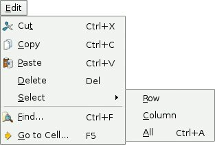
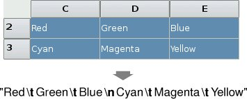
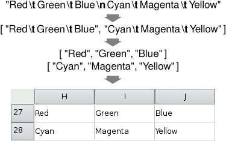

Implementing the Edit MenuWe are now ready to implement the slots that correspond to the application's Edit menu.
void Spreadsheet::cut()
{
copy();
del();
}
The cut() slot corresponds to Edit|Cut. The implementation is simple since Cut is the same as Copy followed by Delete. Figure 4.4. The Spreadsheet application's Edit menu
void Spreadsheet::copy()
{
QTableWidgetSelectionRange range = selectedRange();
QString str;
for (int i = 0; i < range.rowCount(); ++i) {
if (i > 0)
str += "\n";
for (int j = 0; j < range.columnCount(); ++j) {
if (j > 0)
str += "\t";
str += formula(range.topRow() + i, range.leftColumn() + j);
}
}
QApplication::clipboard()->setText(str);
}
The copy() slot corresponds to Edit|Copy. It iterates over the current selection (which is simply the current cell if there is no explicit selection). Each selected cell's formula is added to a QString, with rows separated by newline characters and columns separated by tab characters. The system clipboard is available in Qt through the QApplication::clipboard() static function. By calling QClipboard::setText(), we make the text available on the clipboard, both to this application and to other applications that support plain text. Our format with tab and newline characters as separators is understood by a variety of applications, including Microsoft Excel. Figure 4.5. Copying a selection onto the clipboard The QTableWidget::selectedRanges() function returns a list of selection ranges. We know there cannot be more than one because we set the selection mode to QAbstractItemView::ContiguousSelection in the constructor. For our convenience, we define a selectedRange() function that returns the selection range:
QTableWidgetSelectionRange Spreadsheet::selectedRange() const
{
QList<QTableWidgetSelectionRange> ranges = selectedRanges();
if (ranges.isEmpty())
return QTableWidgetSelectionRange();
return ranges.first();
}
If there is a selection at all, we simply return the first (and only) one. The case where there is no selection should never happen since the ContiguousSelection mode treats the current cell as being selected. But to protect against the possibility of a bug in our program that makes no cell current, we handle this case.
void Spreadsheet::paste()
{
QTableWidgetSelectionRange range = selectedRange();
QString str = QApplication::clipboard()->text();
QStringList rows = str.split('\n');
int numRows = rows.count();
int numColumns = rows.first().count('\t') + 1;
if (range.rowCount() * range.columnCount() != 1
&& (range.rowCount() != numRows
|| range.columnCount() != numColumns)) {
QMessageBox::information(this, tr("Spreadsheet"),
tr("The information cannot be pasted because the copy "
"and paste areas aren't the same size."));
return;
}
for (int i = 0; i < numRows; ++i) {
QStringList columns = rows[i].split('\t');
for (int j = 0; j < numColumns; ++j) {
int row = range.topRow() + i;
int column = range.leftColumn() + j;
if (row < RowCount && column < ColumnCount)
setFormula(row, column, columns[j]);
}
}
somethingChanged();
}
The paste() slot corresponds to Edit|Paste. We fetch the text on the clipboard and call the static function QString::split() to break the string into a QStringList. Each row becomes one string in the list. Next, we determine the dimension of the copy area. The number of rows is the number of strings in the QStringList; the number of columns is the number of tab characters in the first row, plus 1. If only one cell is selected, we use that cell as the top-left corner of the paste area; otherwise, we use the current selection as the paste area. To perform the paste, we iterate over the rows and split each of them into cells by using QString::split() again, but this time using tab as the separator. Figure 4.6 illustrates the steps. Figure 4.6. Pasting clipboard text into the spreadsheet
void Spreadsheet::del()
{
foreach (QTableWidgetItem *item, selectedItems())
delete item;
}
The del() slot corresponds to Edit|Delete. It is sufficient to use delete on each of the Cell objects in the selection to clear the cells. The QTableWidget notices when its QTableWidgetItems are deleted and automatically repaints itself if any of the items were visible. If we call cell() with the location of a deleted cell, it will return a null pointer.
void Spreadsheet::selectCurrentRow()
{
selectRow(currentRow());
}
void Spreadsheet::selectCurrentColumn()
{
selectColumn(currentColumn());
}
The selectCurrentRow() and selectCurrentColumn() functions correspond to the Edit|Select|Row and Edit|Select|Column menu options. The implementations rely on QTableWidget's selectRow() and selectColumn() functions. We do not need to implement the functionality behind Edit|Select|All, since that is provided by QTableWidget's inherited function QAbstractItemView::selectAll().
void Spreadsheet::findNext(const QString &str, Qt::CaseSensitivity cs)
{
int row = currentRow();
int column = currentColumn() + 1;
while (row < RowCount) {
while (column < ColumnCount) {
if (text(row, column).contains(str, cs)) {
clearSelection();
setCurrentCell(row, column);
activateWindow();
return;
}
++column;
}
column = 0;
++row;
}
QApplication::beep();
}
The findNext() slot iterates through the cells starting from the cell to the right of the cursor and moving right until the last column is reached, then continues from the first column in the row below, and so on until the text is found or until the very last cell is reached. For example, if the current cell is cell C24, we search D24, E24, …, Z24, then A25, B25, C25, …, Z25, and so on until Z999. If we find a match, we clear the current selection, move the cell cursor to the cell that matched, and make the window that contains the Spreadsheet active. If no match is found, we make the application beep to indicate that the search finished unsuccessfully.
void Spreadsheet::findPrevious(const QString &str,
Qt::CaseSensitivity cs)
{
int row = currentRow();
int column = currentColumn() - 1;
while (row >= 0) {
while (column >= 0) {
if (text(row, column).contains(str, cs)) {
clearSelection();
setCurrentCell(row, column);
activateWindow();
return;
}
--column;
}
column = ColumnCount - 1;
--row;
}
QApplication::beep();
}
The findPrevious() slot is similar to findNext(), except that it iterates backward and stops at cell A1. |